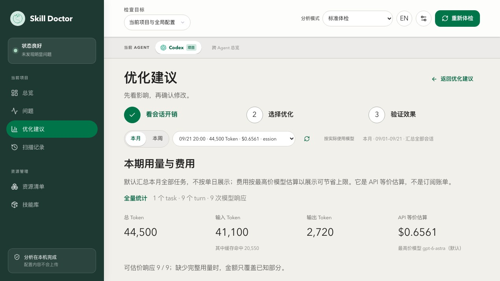
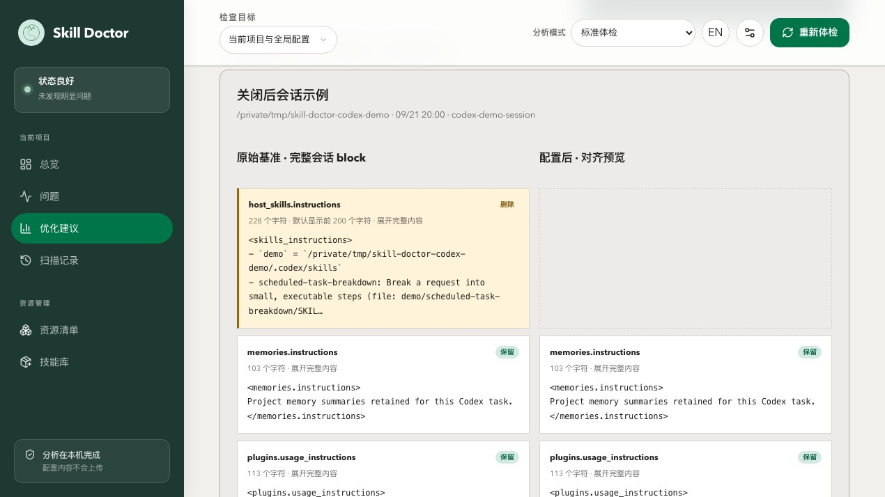
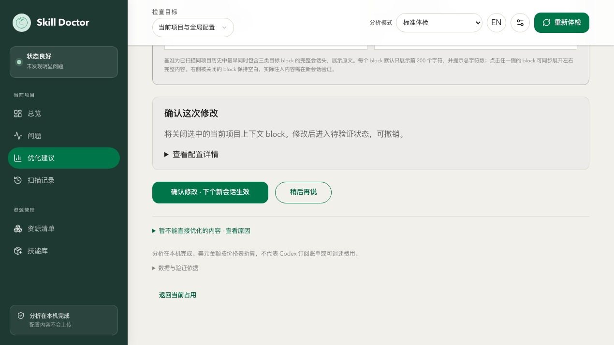
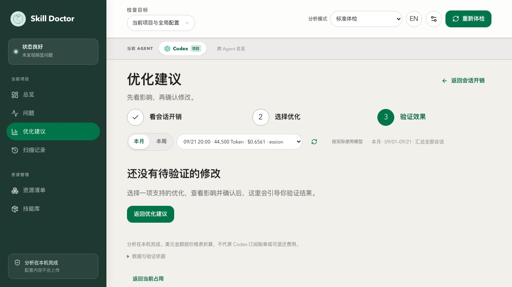

怎么用这本手册How to read this manual
新增：当前 Codex 优化建议浏览器实操（5 张真实截图）New: current Codex optimization walkthrough with five real screenshots
每个命令一节，固定包含三块：使用场景（什么时候该用它）、使用方式（命令与常用参数）、使用效果（下方深色终端块为真实运行的彩色截图）。Each command gets its own section with three blocks: Scenario (when to reach for it), Usage (the command and common flags), Effect (the dark terminal block below is a real, colorized screenshot of the run).
约定：--scope project 只看当前仓库、避免扫到全局；--json 输出机器可读结果便于 CI。手册示例在一个含 1 个重复技能的示例项目里运行，所以多处会出现 data-exporter 有 2 份 的现象。Conventions: --scope project scopes to the current repo and avoids touching global config; --json emits machine-readable output for CI. The example project contains 1 duplicate skill, so you will see "data-exporter has 2 copies" appear in several places.
安装与运行Install & Run 安装与运行Install & Run
使用场景Scenario
skill-doctor 是一个本地 CLI 工具，用于审计 AI 编码助手（Claude Code / Codex / Copilot / Cursor / WorkBuddy / InfCode 等）安装的「技能（skill）」：重复、冲突、安全风险与上下文成本。安装后即可在任意项目目录里使用。skill-doctor is a local CLI that audits skills installed by AI coding assistants (Claude Code / Codex / Copilot / Cursor / WorkBuddy / InfCode, etc.): duplicates, conflicts, security risks, and context cost. Install it once and use it in any project directory.
使用方式Usage
| 选项Option | 说明Description |
|---|---|
| npm i -g @evilstar2025/skill-doctor | 全局安装，之后直接用 skill-doctor 命令Install globally, then use the `skill-doctor` command directly. |
| npx @evilstar2025/skill-doctor <cmd> | 不安装，临时运行某条命令Run a command on the fly without installing. |
| skill-doctor --version | 查看版本（本手册基于 0.7.0）Print the version (this manual targets 0.7.0). |
说明Notes
Node.js ≥ 20。所有命令都可加 --json 输出机器可读结果，便于接入 CI。手册中的示例都在一个示例项目里运行：该项目故意把同名技能 data-exporter 放进了 .claude 与 .github 两套平台目录（制造 1 个重复），并放了 code-reviewer 用于对比演示。Requires Node.js ≥ 20. Every command accepts `--json` for machine-readable output, which is convenient for CI. The examples in this manual run against a sample project that intentionally puts a skill named `data-exporter` into both `.claude` and `.github` (creating 1 duplicate) and also contains `code-reviewer` for diff demos.
使用效果Effect
$ skill-doctor --version 0.7.0
skill-doctor --helpskill-doctor --help 总览：--helpOverview: --help
使用场景Scenario
第一次使用或忘记子命令/参数时，先看帮助。它会列出全部命令与可选项，是最常用的「目录」。First time using it, or when you forget a sub-command or flag? Check --help first. It lists every command and option and serves as the index.
使用方式Usage
| 选项Option | 说明Description |
|---|---|
| -h / --help | 对任意子命令也有效，例如 skill-doctor conflicts --helpWorks for any sub-command, e.g. `skill-doctor conflicts --help`. |
| -v / --version | 仅打印版本号Print just the version. |
说明Notes
下面是本机执行 --help 的真实输出，可作为命令速查表。Below is the real output of --help on this machine, which you can use as a cheat sheet.
使用效果Effect
$ skill-doctor --help skill-doctor Usage: skill-doctor scan [--scope project|global|all] [--strategy token|embedding] [--threshold N] [--embedding-model ID] [--json] [--report [path]] skill-doctor show <name> [--json] skill-doctor conflicts [--scope project|global|all] [--strategy token|embedding] [--threshold N] [--embedding-model ID] [--analyze] [--kind duplicate|conflict|all] [--fail-on high|med|low] [--limit N] [--json] skill-doctor audit [--scope project|global|all] [--severity high|med|low] [--fail-on high|med|low] [--ai] [--no-cache] [--json] [--report [path]] skill-doctor check [--scope project|global|all] [--fail-on high|med|low] [--budget-tokens N] [--json] skill-doctor cleanup [--scope project|global|all] [--json] skill-doctor cost [project-dir] [--platform PLATFORM] [--scope project|global|all] [--source skill|mcp|all] [--resource all|agents|skill|mcp|plugin|memory] [--codex-config path] [--show-disable] [--include-cache] [--tokenizer openai|approx] [--tokenizer-model model] [--budget-tokens N] [--platform-budget platform=N] [--fail-on-budget] [--json] skill-doctor context [project-dir] [--platform PLATFORM] [--scope project|global|all] [--source skill|mcp|all] [--resource all|agents|skill|mcp|plugin|memory] [--codex-config path] [--show-disable] [--include-cache] [--tokenizer openai|approx] [--tokenizer-model model] [--budget-tokens N] [--platform-budget platform=N] [--fail-on-budget] [--json] skill-doctor context enable|disable --id <resource-id> [--platform codex] [--codex-config path] [--json] skill-doctor diff <skill-a> <skill-b> [--report [path]] skill-doctor ui [project-dir] [--port N] [--no-open] skill-doctor dashboard [--scope project|global|all] [--report [path]] [--open] skill-doctor install <path|slug> [--target <platform>] [--link] skill-doctor uninstall <name> [--target <platform>] [--force] skill-doctor center migrate|show skill-doctor config view [--json] skill-doctor config set analysis|embedding --base-url <url> --model <model> [--api-key <key>] [--timeout-ms <n>] [--clear-api-key] skill-doctor config test [--service analysis|embedding] skill-doctor --version Model config file: ~/.skill-doctor/config.json { "analysis": { "baseUrl": "http://host/v1", "model": "gpt-4o", "apiKey": "..." }, "embedding": { "baseUrl": "http://host/v1", "model": "bge-m3", "apiKey": "..." } } Platforms: --platform values: claude|cursor|copilot|codex|gemini|windsurf|trae|opencode|kiro|openclaw|hermes|workbuddy|infcode|unknown (aliases: claudecode->claude, claude-code->claude)
scanscan scan — 盘点已安装的技能scan — list installed skills
使用场景Scenario
你想知道「当前项目到底装了哪些 skill、分布在哪些平台、有没有重复或冲突」时，先跑 scan。它是所有后续诊断的起点。When you want to know which skills are installed in the current project, on which platforms, and whether any duplicates or conflicts exist — run `scan` first. It is the starting point for all subsequent diagnostics.
使用方式Usage
| 选项Option | 说明Description |
|---|---|
| --scope project|global|all | 扫描范围；默认 all。手册示例用 project 只看当前仓库Scan scope; default `all`. The manual examples use `project` to limit the scan to the current repo. |
| --group | 用模型把技能按主题分组（需要配置分析模型）Use an LLM to group skills by topic (requires a configured analysis model). |
| --strategy token|embedding | 冲突检测策略；默认 token（本地、离线）Conflict-detection strategy; default `token` (local, offline). |
| --report [path] | 额外导出一个可视化 HTML 报告Also export a visual HTML report. |
| --json | 输出结构化 JSON，便于脚本处理Emit structured JSON for script consumption. |
说明Notes
示例中扫描到 3 个技能（claude×2、copilot×1），并发现 1 个重复。--report 会写出 scan-report.html（本手册附录附带样例）。The example finds 3 skills (claude × 2, copilot × 1) and reports 1 duplicate. `--report` writes scan-report.html (a real sample ships with this manual).
使用效果Effect
$ skill-doctor scan --scope project SKILL DOCTOR REPORT Total skills installed: 3 Duplicates detected: 1 Conflicts detected: 0 Platforms: - claude: 2 - copilot: 1 Skills: - code-reviewer platform: claude scope: project install source: .claude/skills confidence: high repository: — author: — - data-exporter platform: claude scope: project install source: .claude/skills confidence: high repository: — author: — - data-exporter platform: copilot scope: project install source: .github/skills confidence: high repository: — author: —
$ skill-doctor scan --scope project --report scan-report.html Report written to: E:/tmp/sd-manual-demo/caps/scan-report.html
show <name>show <name> show — 查看单个技能详情show — inspect one skill
使用场景Scenario
扫出一堆技能后，想深挖某一个：它的来源路径、描述、触发条件（When to Use），以及和它语义相近的其它技能。After scanning a pile of skills, drill into one: its source path, description, trigger conditions (When to Use), and other semantically similar skills.
使用方式Usage
| 选项Option | 说明Description |
|---|---|
| <name> | 技能名（必填），例如 data-exporterSkill name (required), e.g. `data-exporter`. |
| --json | 输出结构化 JSONEmit structured JSON. |
说明Notes
下方真实输出里，RELATED SKILLS 给出了与 data-exporter 相似度 0.25 的关联技能——这正是重复/冲突排查的线索。In the real output below, RELATED SKILLS reports a similarity of 0.25 with another `data-exporter` — that is exactly the lead you follow for duplicate / conflict investigations.
使用效果Effect
$ skill-doctor show data-exporter SKILL: data-exporter Platform: claude | Scope: project Source: E:\tmp\sd-manual-demo\.claude\skills\data-exporter\SKILL.md PROVENANCE Install source: .claude/skills Scope: project Confidence: high Repository: — Author: — DESCRIPTION Export database tables and SQL query results to CSV and Parquet files for downstream analysis and reporting. WHEN TO USE → Exporting a Postgres table to CSV → Dumping the result of an ad-hoc SQL query for reporting → Writing Parquet files for a data pipeline → Export database tables and SQL query results to CSV and Parquet files for downstream analysis and reporting. RELATED SKILLS data-exporter similarity: 0.25 shared: analysi, csv, data
conflictsconflicts conflicts — 检测重复与冲突conflicts — detect duplicates & conflicts
使用场景Scenario
当你怀疑不同平台/目录里藏着同名或高度雷同的技能（会互相覆盖、浪费上下文），用 conflicts 找出它们，并给出「删哪份、留哪份」的建议。When you suspect different platforms/directories hide same-named or highly similar skills (which overwrite each other and waste context), `conflicts` finds them and suggests "delete which, keep which".
使用方式Usage
| 选项Option | 说明Description |
|---|---|
| --scope project|global|all | 扫描范围，默认 allScan scope, default `all`. |
| --kind duplicate|conflict|all | 只关注某一类；duplicate=完全同名，conflict=语义雷同Filter by kind; `duplicate` = same name, `conflict` = semantically similar. |
| --fail-on high|med|low | 达到阈值则以退出码 1 失败，用于 CI 卡点Exit with code 1 when severity reaches this level — for CI gating. |
| --limit N | 最多显示 N 条Show at most N items. |
| --strategy / --threshold / --embedding-model | 同 scan，控制冲突检测精度Same as `scan`; controls detection precision. |
说明Notes
真实输出中检测到 data-exporter 有 2 份副本，并建议删除较旧的一份（.github 下那份）。在 CI 里加 --fail-on high 即可把「出现重复」变成构建失败。The real output finds 2 copies of `data-exporter` and recommends removing the older one (the one under `.github`). In CI, add `--fail-on high` so any duplicate fails the build.
使用效果Effect
$ skill-doctor conflicts --scope project DUPLICATES data-exporter [2 copies] E:\tmp\sd-manual-demo\.claude\skills\data-exporter\SKILL.md E:\tmp\sd-manual-demo\.github\skills\data-exporter\SKILL.md SUGGESTIONS consider removing: E:\tmp\sd-manual-demo\.github\skills\data-exporter\SKILL.md keep: E:\tmp\sd-manual-demo\.claude\skills\data-exporter\SKILL.md (newer (modified 2026-08-07))
auditaudit audit — 安全审计audit — security audit
使用场景Scenario
在把技能交付给团队或 CI 之前，想知道有没有明显的安全风险（如危险的 shell 指令、可疑的网络调用等）。不带 --ai 时走本地规则，零配置即可用。Before shipping skills to the team or CI, you want to know whether they contain obvious security risks (dangerous shell commands, suspicious network calls, etc.). Without `--ai`, the audit runs on local rules with zero configuration.
使用方式Usage
| 选项Option | 说明Description |
|---|---|
| --scope project|global|all | 扫描范围，默认 allScan scope, default `all`. |
| --severity high|med|low | 只显示 ≥ 该级别的问题Only show findings of this severity or higher. |
| --ai | 调用配置好的分析模型做增强扫描（需先 config set analysis）Use the configured analysis model for a deeper scan (requires `config set analysis` first). |
| --no-cache | 忽略 AI 审计缓存，重新分析Ignore the AI audit cache and re-analyze. |
| --report [path] | 导出可视化 HTML 审计报告Export a visual HTML audit report. |
说明Notes
本例 3 个示例技能没有命中本地规则，因此显示 No findings。一旦装了含危险指令的技能，这里会列出具体风险点与级别。The 3 example skills do not trigger any local rule, so the result is "No findings". As soon as a skill containing dangerous instructions is installed, the exact risk and severity will appear here.
使用效果Effect
$ skill-doctor audit --scope project Skill Safety Audit — 3 skills scanned No findings.
checkcheck check — 一键健康门禁（CI 首选）check — one-shot health gate (CI favorite)
使用场景Scenario
在 CI / pre-commit 里用一条命令同时检查：安全风险、技能冲突、上下文是否超预算，并给出 pass/fail 与退出码。比分别跑 audit+conflicts+cost 更省事。In CI or pre-commit, run one command that combines: security risks, skill conflicts, and whether context budget is exceeded — and returns pass/fail with an exit code. More convenient than running audit + conflicts + cost separately.
使用方式Usage
| 选项Option | 说明Description |
|---|---|
| --scope project|global|all | 扫描范围，默认 allScan scope, default `all`. |
| --fail-on high|med|low | 严重程度阈值，默认 high；命中则退出码 1Severity threshold (default `high`); exit 1 when reached. |
| --budget-tokens N | 上下文预算（每轮 token 上限），超了算失败Per-turn token budget; exceeding it counts as failure. |
| --json | 输出结构化结果，便于流水线解析Emit structured output for pipelines to parse. |
说明Notes
真实输出显示 failed：安全 0、冲突 1、预算未超。因为发现了 1 个重复（冲突），所以未通过——非常适合作为合并前卡点。Real output: failed — security 0, conflicts 1, budget not exceeded. Because a duplicate was found, the check failed — perfect as a pre-merge gate.
使用效果Effect
$ skill-doctor check --scope project --fail-on high Project check: failed Security findings: 0 Conflicts: 1 Context over budget: no
cleanupcleanup cleanup — 清理重复技能cleanup — remove duplicate skills
使用场景Scenario
conflicts 告诉你「有重复」后，cleanup 列出所有重复副本，并可用 --execute 交互式地逐个删除，把磁盘和上下文收拾干净。Once `conflicts` tells you there are duplicates, `cleanup` lists every duplicate copy and can — with `--execute` — interactively remove them one by one, reclaiming both disk and context.
使用方式Usage
| 选项Option | 说明Description |
|---|---|
| --scope project|global|all | 扫描范围，默认 allScan scope, default `all`. |
| --execute | 进入交互模式，逐项选择删除哪一份（默认仅列出）Enter interactive mode (default is read-only listing only). |
| --json | 输出待清理清单，便于脚本Emit the cleanup list as JSON for scripts. |
说明Notes
不加 --execute 时是只读预览（安全）；加 --execute 后会对每个重复向你提问 [1/2/s]，按 s 可跳过。演示输出为只读预览。Without `--execute`, this is a safe read-only preview. With `--execute`, it asks you `[1/2/s]` for each duplicate (press `s` to skip). The demo output is the preview.
使用效果Effect
$ skill-doctor cleanup --scope project DUPLICATE SKILLS 1 duplicate found. Run with --execute to remove interactively. data-exporter [1] E:\tmp\sd-manual-demo\.claude\skills\data-exporter\SKILL.md [2] E:\tmp\sd-manual-demo\.github\skills\data-exporter\SKILL.md
cost / contextcost / context cost — 估算「上下文税」cost — estimate the context tax
使用场景Scenario
技能、MCP、Agent 配置每轮都会悄悄塞进对话上下文，吃掉 token 与钱。cost 帮你按平台/资源拆解「每轮要背多少 token」，并对照预算评级；context 子命令还能开关 Codex 的某些资源。Skills, MCP servers, and Agent config silently inflate every conversation, burning tokens and money. `cost` breaks down per-platform/per-resource "how many tokens per turn" and grades you against the budget; the `context` sub-command can also enable/disable Codex resources.
使用方式Usage
| 选项Option | 说明Description |
|---|---|
| [project-dir] | 要分析的项目目录，默认当前目录Project directory to analyze (default: current). |
| --platform <p> | 只看某个平台（claude/codex/copilot/...）Limit to a single platform (claude/codex/copilot/...). |
| --source skill|mcp|all | 只统计技能 / MCP / 全部Restrict to skills / MCP / everything. |
| --budget-tokens N | 每轮预算，超过则标红Per-turn budget; over-budget rows are flagged. |
| --fail-on-budget | 超预算时退出码 1Exit with code 1 when over budget. |
| --tokenizer openai|approx | 分词器；默认 openai（精确）Tokenizer; default `openai` (precise). |
| context enable|disable --id <id> | 启用/禁用某个 Codex 上下文资源Enable/disable a Codex context resource. |
说明Notes
真实输出给出每轮 392 token 的估算、按平台（copilot/claude）拆分、各技能开销，并给出 A 级（预算内）评级。这是优化「AI 越用越贵」的利器。Real output: ~392 tokens/turn, broken down per platform (copilot/claude) and per skill, graded A (within budget). A great lever to fight "AI gets more expensive the more you use it".
使用效果Effect
$ skill-doctor cost --scope project CONTEXT COST REPORT Project: E:\tmp\sd-manual-demo Scope: project (current project only) Estimated token tax: 392 tokens/turn Tokenizer: openai model=gpt-4o encoding=o200k_base Budget: 2000 tokens/turn Grade: A (within budget) Items scanned: 5 By coding agent: - copilot: 236 tokens/turn (3 items) budget: 2000 grade: A (within budget) startup: 236 always-on: 0 activation risk: 241 - claude: 156 tokens/turn (2 items) budget: 2000 grade: A (within budget) startup: 156 always-on: 0 activation risk: 158 Highest cost items: - data-exporter tokens: 80 platform: claude scope: project source: skill kind: claude-skill-description activation: startup budget: startup-selection activation tokens: 83 confidence: high path: E:\tmp\sd-manual-demo\.claude\skills\data-exporter\SKILL.md fix: OK - data-exporter tokens: 80 platform: copilot scope: project source: skill kind: agent-skill-description activation: startup budget: startup-selection activation tokens: 83 confidence: high path: E:\tmp\sd-manual-demo\.github\skills\data-exporter\SKILL.md fix: OK - data-exporter tokens: 80 platform: copilot scope: project source: skill kind: agent-skill-description activation: startup budget: startup-selection activation tokens: 83 confidence: high path: E:\tmp\sd-manual-demo\.claude\skills\data-exporter\SKILL.md fix: OK - code-reviewer tokens: 76 platform: claude scope: project source: skill kind: claude-skill-description activation: startup budget: startup-selection activation tokens: 75 confidence: high path: E:\tmp\sd-manual-demo\.claude\skills\code-reviewer\SKILL.md fix: OK - code-reviewer tokens: 76 platform: copilot scope: project source: skill kind: agent-skill-description activation: startup budget: startup-selection activation tokens: 75 confidence: high path: E:\tmp\sd-manual-demo\.claude\skills\code-reviewer\SKILL.md fix: OK
diff <a> <b>diff <a> <b> diff — 对比两个技能diff — compare two skills
使用场景Scenario
你想确认两个技能到底差在哪（比如要合并、要替换、还是根本是同一个东西换了个名），用 diff 并排对比它们的字段与触发条件。You want to know exactly how two skills differ (to merge, replace, or discover they are the same thing under different names). `diff` lays out their fields and trigger conditions side by side.
使用方式Usage
| 选项Option | 说明Description |
|---|---|
| <skill-a> <skill-b> | 两个技能名（必填）Two skill names (required). |
| --report [path] | 导出可视化 HTML 对比报告Export a visual HTML comparison report. |
说明Notes
未配置分析模型时，diff 会回退到「仅展示提取字段」模式（下方真实输出中的提示）。配置模型后会额外给出语义层面的差异解读。When no analysis model is configured, `diff` falls back to "fields only" mode (see the notice in the real output below). Once a model is configured, it also gives a semantic interpretation of the differences.
使用效果Effect
$ skill-doctor diff data-exporter code-reviewer ┌──────────────────────────────────────────────────────────┐ │ Skill Diff: data-exporter vs code-reviewer └──────────────────────────────────────────────────────────┘ ⚠ LLM analysis unavailable — showing extracted fields only. ── 触发条件 ──────────────────────────────────────────────────── data-exporter - Exporting a Postgres table to CSV - Dumping the result of an ad-hoc SQL query for reporting - Writing Parquet files for a data pipeline code-reviewer - Reviewing a GitHub pull request for SQL injection risks - Checking a diff for performance regressions - Enforcing project style rules on new code
uiui ui — 启动 Web 仪表盘ui — launch the web dashboard
使用场景Scenario
比起纯终端，你更想要一个可点的网页界面：Codex 项目的总览、问题、优化建议、扫描记录、资源清单和技能库一目了然。ui 会在本地起一个带鉴权会话的 Web 服务。When you prefer a clickable web UI over the terminal — with a Codex project's overview, issues, optimization suggestions, scan history, resource inventory, and skill library at a glance — `ui` starts a local web server with session-based auth.
使用方式Usage
| 选项Option | 说明Description |
|---|---|
| [project-dir] | 要分析的项目目录，默认当前目录Project directory to analyze (default: current). |
| --port N | 监听端口，默认随机Listen port; default: random. |
| --no-open | 不自动打开浏览器（服务器仍正常启动）Do not auto-open the browser (server still starts). |
说明Notes
启动后会打印一个带 session token 的本地 URL（下方真实输出）。本手册的界面截图均来自一个只包含 Codex 项目级 .codex/skills 的当前示例项目，首次进入时选择 Codex；按 Ctrl+C 停止服务。After starting, the CLI prints a local URL with a session token (see the real output below). The UI screenshots in this manual use a current example project containing only project-level .codex/skills, with Codex selected on first launch; press Ctrl+C to stop.
使用效果Effect
$ skill-doctor ui --port 4173 --no-open Skill Doctor UI: http://127.0.0.1:4173/session/RJebkCY4F_lOCXp6llb3m1dIJcSdrPoEKdXIb7t6mOg Press Ctrl+C to stop.
当前界面截图（示例项目只包含 Codex 项目级 .codex/skills）：Current UI screenshots (the example project contains only project-level .codex/skills):


ui Codex 优化建议：浏览器实操Codex optimization: browser walkthrough
本节按当前 v0.7.0 本地构建的 Codex 示例项目重新截图。示例只包含一个项目级 .codex/skills Skill；截图中的数据来自 1 个 task、9 个 turn、9 次模型响应。页面只做本地估算和修改前预览，没有执行配置写入。These screenshots were recaptured from the current v0.7.0 local build with a Codex example project. The example contains one project-level .codex/skills Skill; the visible sample has 1 task, 9 turns, and 9 model responses. The UI stays local and read-only through the preview step; no configuration was written.
1. 打开 UI，进入「优化建议」1. Open the UI and choose Optimization
在源码仓库安装依赖并构建，然后为目标项目启动本地 UI。首次引导选择 Codex；侧栏当前名称是「优化建议」，不再是旧版的「收益预估」。Install dependencies and build from the source checkout, then start the local UI for the target project. Select Codex in onboarding. The current sidebar label is Optimization, replacing the old Benefit estimation wording.
npm run build node dist/index.js ui /path/to/project --no-open
2. 先看会话开销2. Read the session-cost baseline first
点击「看会话开销」进入第 1 步。页面按本月/本周汇总任务、turn、Token 和 API 等价费用；「按实际使用模型」可以切换计价口径。Click View session cost to open step 1. The page summarizes tasks, turns, tokens, and API-equivalent cost for the month or week. Use the pricing toggle to switch between the maximum-model and actual-model views.
| 示例指标Example metric | 当前截图Current screenshot |
|---|---|
| 任务 / turn / 响应Tasks / turns / responses | 1 / 9 / 9 |
| 总 TokenTotal tokens | 44,500 |
| 输入 / 输出 TokenInput / output tokens | 41,100 / 2,720 |
| 缓存命中输入Cached input | 20,550 |
| API 等价估算API-equivalent estimate | $0.6561 · gpt-6-astra 上限价 |

3. 查看关闭后的会话对比3. Inspect the after-change context preview
回到第 2 步点击「查看会话变化」。当前页面会把历史会话头部按 block 并排展示：选中的 host_skills.instructions 标成「删除」，记忆和 Plugins 等未选内容保留。这里是证据和对齐预览，不是已经运行过的新会话。Return to step 2 and click View session changes. The current page shows historical session-header blocks side by side: the selected host_skills.instructions block is marked deleted while unselected memory and Plugins blocks are retained. This is an evidence-aligned preview, not a re-run of a new session.

4. 修改前检查确认预览4. Review the confirmation preview before changing config
点击「查看并确认修改」后，页面显示受影响的配置范围、目标和「下个新会话生效」提示。截图停在确认按钮之前；真正写入配置必须由用户明确确认。Click Review and confirm change to see the affected scope, target, and the notice that the change takes effect in the next new session. This screenshot stops before confirmation; writing configuration still requires an explicit user action.

5. 写入后必须在新会话验证5. Verify in a new session after writing
应用修改后进入第 3 步，向导会要求启动加载该项目配置的新 Codex 会话，再检查目标 block 是否消失。下面这张图保留了本次只读演示的空状态，因为没有点击确认按钮；它不会把预估误写成已实现节省。After applying a change, step 3 asks you to start a new Codex session that loads the project configuration and check whether the target block is gone. This read-only walkthrough leaves the empty state because Confirm was not clicked; it does not turn an estimate into realized savings.

如何理解这组数字How to interpret these numbers
这次示例中，选中的项目级技能目录显示每次响应约 60 Token、9/9 次响应覆盖，累计约 540 Token；费用区间为 $0.00108–$0.0108。它们是按历史 block、模型价格和缓存边界推算的潜在影响，不是已确认的账单节省。会话新增、Codex 版本、配置和价格表变化后，数字都会变化。In this example, the selected project-level Skill catalog shows about 60 Tokens per response, covering 9/9 responses, for a cumulative estimate of about 540 Tokens; the displayed cost range is $0.00108–$0.0108. These are potential impacts projected from historical blocks, model prices, and cache bounds—not confirmed bill savings. New sessions, Codex versions, configuration, and price-table changes will change the numbers.
dashboarddashboard dashboard — 生成静态总览报告dashboard — export a static overview report
使用场景Scenario
你不想起服务，只想导出一份「可分享/可归档」的 HTML 总览（技能、冲突、审计、重复、清理建议一页纸），发给同事或提交到仓库。You do not want to run a server — just export a single-file HTML overview (skills, conflicts, audit, duplicates, cleanup suggestions) to share or commit.
使用方式Usage
| 选项Option | 说明Description |
|---|---|
| --scope project|global|all | 扫描范围，默认 allScan scope, default `all`. |
| --report [path] | 导出 HTML；不写路径默认 dashboard.htmlExport HTML; default path is `dashboard.html`. |
| --open | 生成后自动用浏览器打开Auto-open the report in a browser after generation. |
说明Notes
默认（不带 --report）也会写出 dashboard.html。本手册附录附带本次生成的 dashboard.html 样例。Even without `--report`, dashboard.html is written. A real sample of it ships as an appendix of this manual.
使用效果Effect
$ skill-doctor dashboard --scope project --report dashboard.html Dashboard written to: E:/tmp/sd-manual-demo/caps/dashboard.html
install / uninstallinstall / uninstall install / uninstall — 安装与卸载技能install / uninstall — manage skills
使用场景Scenario
你拿到一个本地 skill 目录（或市场 slug），想装到某个 AI 平台的技能目录里统一纳管；用完后用 uninstall 卸载。两者都写入「统一技能中心」center.json。You have a local skill directory (or a marketplace slug) and want to install it into a specific AI platform directory, then later uninstall it. Both operations are recorded in the unified skill center (center.json).
使用方式Usage
| 选项Option | 说明Description |
|---|---|
| <path|slug> | 本地路径或市场 slug（必填）Local path or marketplace slug (required). |
| --target <platform> | 目标平台；不写则自动探测当前活跃平台Target platform; auto-detected when omitted. |
| --link | 以符号链接方式安装（便于开发调试）Install as a symlink (handy while developing). |
| uninstall <name> --target <p> | 卸载指定名称的技能Uninstall a skill by name. |
| --force | 强制卸载（即使仍有其它引用）Force uninstall even if other references exist. |
说明Notes
下方为隔离环境（临时 HOME）下的真实演示：安装本地 data-exporter 到 claude → center.json 立即登记该技能与安装记录 → 强制卸载后记录被移除。The example below uses an isolated environment (a temporary HOME) and shows: install `data-exporter` into claude → center.json immediately records the skill and its installation → force-uninstall removes the record.
使用效果Effect
$ skill-doctor install ./data-exporter --target claude # then uninstall ✓ Installed 'data-exporter' to claude Path: E:\tmp\sd-manual-home\.claude\skills\data-exporter\SKILL.md --- center.json after install --- { "version": 1, "skills": [ { "id": "64b7eb3b082ca5f6952d1cd772e24fa97541d4becb47e797e3c4f2e5840a4e52", "name": "data-exporter", "rootPath": "E:\\tmp\\sd-manual-home\\.claude\\skills\\data-exporter", "source": { "type": "local", "originalPath": "E:\\tmp\\sd-manual-demo\\.claude\\skills\\data-exporter\\SKILL.md" }, "treeHash": "sha256:e838245632383828c2414edbcd112ab773292d084065bda76ba58aa2e8650843", "addedAt": "2026-08-07T06:15:07.251Z", "updatedAt": "2026-08-07T06:15:07.251Z", "installations": [ { "id": "7a2d3e1a42503025822ddb949e43383b51a998e25234c3917b7d337e511d5166", "targetId": "claude-global-skills", "platform": "claude", "scope": "global", "mode": "copy", "installedPath": "E:\\tmp\\sd-manual-home\\.claude\\skills\\data-exporter\\SKILL.md", "installedRootPath": "E:\\tmp\\sd-manual-home\\.claude\\skills\\data-exporter", "deployedHash": "sha256:e838245632383828c2414edbcd112ab773292d084065bda76ba58aa2e8650843", "installedAt": "2026-08-07T06:15:07.250Z" } ] } ] } ✓ Uninstalled 'data-exporter' from claude --- center.json after uninstall (forced) --- { "version": 1, "skills": [] }
centercenter center — 统一技能中心center — the unified skill center
使用场景Scenario
skill-doctor 用 center.json 作为「技能与安装记录的单一真相源」。老旧版本数据（catalog/deployments/registry）需要一次性迁移过来；show 则查看当前全部纳管技能与安装情况。skill-doctor uses `center.json` as the single source of truth for skills and their installation records. Older data (catalog/deployments/registry) must be migrated in once; `show` then prints the whole picture.
使用方式Usage
| 选项Option | 说明Description |
|---|---|
| center migrate | 把旧格式数据迁移到 center.json（幂等，可重复执行）Migrate legacy data into center.json (idempotent, re-runnable). |
| center show | 以 JSON 打印 center.json 全部内容Print the entire center.json as JSON. |
说明Notes
migrate 真实输出显示已迁移 34 个技能、1 个安装记录、无备份（说明本机早已是 center 格式）。show 输出较长，下方仅截取前若干项示意（本机共 34 个技能）。`migrate` output shows 34 skills migrated, 1 installation record, no backup (the machine was already in center format). The `show` output is long; only the first entries are shown below (34 skills in total on this machine).
使用效果Effect
$ skill-doctor center migrate Migrated to center.json: skills: 34 installations: 1 backups: (none)
$ skill-doctor center show { "version": 1, "skills": [ { "id": "8f03cf43-2c5b-446c-a818-4bc49e531f93", "name": "agent-evaluator", "rootPath": "E:\\GitHub\\skills\\.claude\\skills\\agent-evaluator", "source": { "type": "local", "originalPath": "E:\\GitHub\\skills\\.claude\\skills\\agent-evaluator" }, "treeHash": "sha256:65200faa99549113977205cef59cf1ba2bf9eb6b714e45d5d7bc4100b9c3f4d1", "addedAt": "2026-07-27T00:57:35.725Z", "updatedAt": "2026-07-27T00:57:35.725Z", "installations": [] }, { "id": "d4f52402-2de4-403d-8f2f-cbe32a396162", "name": "ai-image-asset-generator", "rootPath": "E:\\GitHub\\skills\\.claude\\skills\\ai-image-asset-generator", "source": { "type": "local", "originalPath": "E:\\GitHub\\skills\\.claude\\skills\\ai-image-asset-generator" }, "treeHash": "sha256:651252f7b73f130fd5e2c306a0e340e47c1cb32c76fe90add2ab04df789fda3e", "addedAt": "2026-07-27T00:57:35.773Z", "updatedAt": "2026-07-27T00:57:35.773Z", "installations": [] }, { …（已省略剩余技能，本机 center.json 共 34 个技能）
configconfig config — 配置分析 / 嵌入模型config — configure analysis / embedding models
使用场景Scenario
要让 skill-doctor 的 AI 增强能力（show 的语义解读、conflicts 的 embedding 策略、audit --ai、diff 的语义差异）生效，需要先在 ~/.skill-doctor/config.json 里配置一个 OpenAI 兼容的分析模型（可选再配嵌入模型）。To unlock skill-doctor's AI-enhanced capabilities (semantic interpretation in `show`, embedding strategy in `conflicts`, `audit --ai`, semantic differences in `diff`), first configure an OpenAI-compatible analysis model in `~/.skill-doctor/config.json` (optionally an embedding model too).
使用方式Usage
| 选项Option | 说明Description |
|---|---|
| config view | 查看当前模型配置状态View the current model configuration. |
| config set analysis|embedding --base-url <url> --model <m> | 设置分析/嵌入模型端点与模型名Set the analysis/embedding model endpoint and name. |
| --api-key <key> | 设置 API Key（也可不写，走环境变量）Set the API key (or rely on the environment variable). |
| --clear-api-key | 清除已保存的 KeyClear a stored API key. |
| config test [--service analysis|embedding] | 连通性自检Connectivity self-test. |
说明Notes
下方真实输出显示本机尚未配置模型（not configured）。配置后，show/conflicts --strategy embedding/audit --ai/diff 才会启用对应的智能能力。The real output below shows the machine is not configured yet. Once configured, `show`, `conflicts --strategy embedding`, `audit --ai`, and `diff` will gain the corresponding smart features.
使用效果Effect
$ skill-doctor config view Model configuration (~/.skill-doctor/config.json): analysis: not configured embedding: not configured
$ skill-doctor config set analysis --base-url <url> --model <model> Usage: skill-doctor config set analysis|embedding --base-url <url> --model <model> [--api-key <key>] [--timeout-ms <n>] [--clear-api-key]